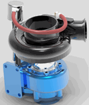

KeyShot rendering
Use Solid Edge rendering during the design and refinement steps of the modeling process. You can then use KeyShot if you need to generate a photorealistic image of your Solid Edge model. For example, you might want to share this with project stakeholders so that they can better visualize the final product, or you might want to use it in a publication.
KeyShot rendering is different from a persistent display mode because you are creating a separate file for a static representation. The process requires more time to complete. The application also supports the animation definitions from the Solid Edge ERA environment in the event that you may need to generate a high quality animation. Below is an example of the output you can expect.

To learn more, see the Help topic, Render with KeyShot